MedCore Logistics · Expadox Limited internship, cohort 3
MedCore Logistics is a fintech startup providing online payment processing and wallet services across multiple African countries. Its infrastructure spans on-premise systems and AWS and Azure cloud workloads, but there was no centralized logging, no visibility into failed logins or network anomalies, and no structured detection or escalation process. Payment APIs and user data were a direct target for credential stuffing and data exfiltration, with detection delay as the single biggest driver of breach cost. The team had 14 days to design and stand up a centralized security monitoring environment delivering real-time detection, automated alerting, and evidence-based reporting across endpoints, network, and cloud.
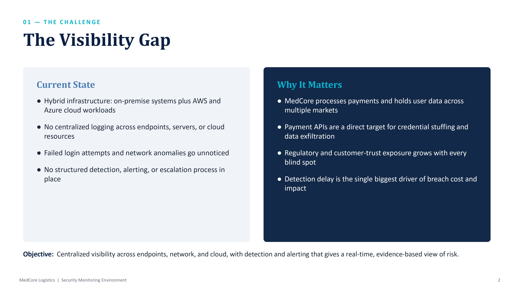
This was a team build, split across analyst, engineer, and responder responsibilities. My specific contributions:
Log sources from on-premise servers, Windows and Linux endpoints, AWS CloudTrail, Azure Activity Log, and Suricata network sensors are tied together through an encrypted Tailscale mesh, removing the need for open inbound firewall ports. Wazuh sits at the core for ingestion, correlation, and detection mapped to MITRE ATT&CK, with Action1 covering endpoint patch and vulnerability visibility and Suricata covering network-based detection.
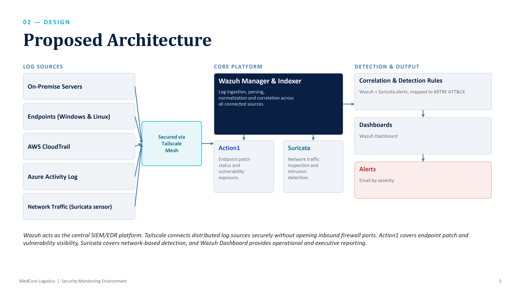
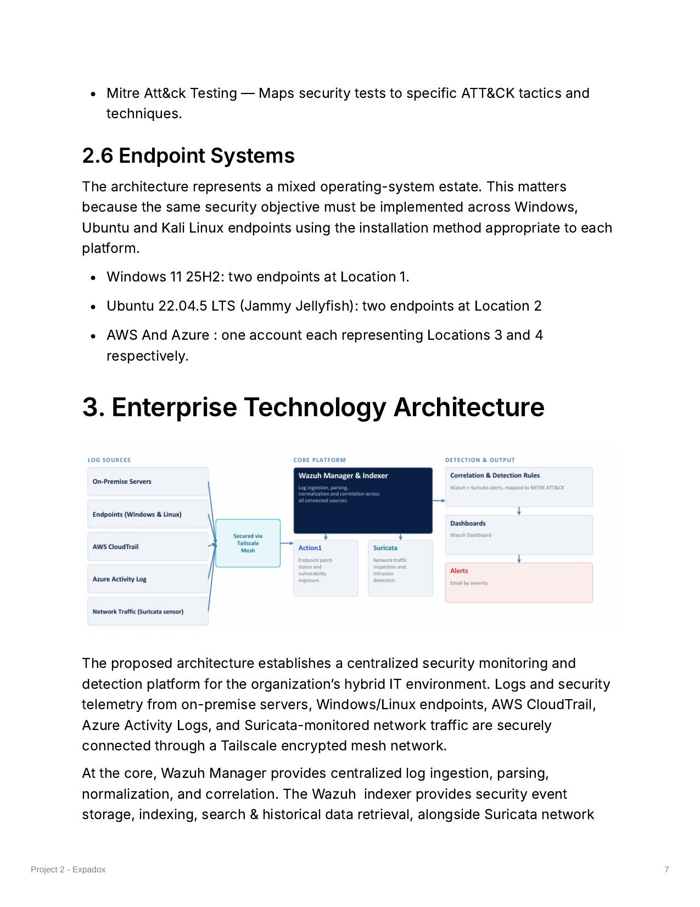
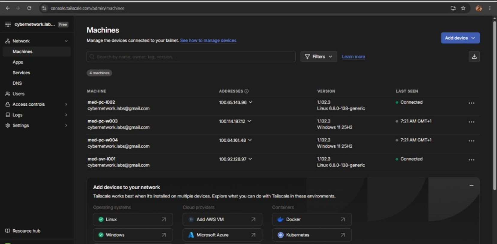
The Wazuh manager, indexer, and dashboard were deployed on MED-SVR-L001, with agents rolled out across the Windows and Linux endpoints. Suricata was installed and configured on every endpoint, generating structured EVE JSON logs and feeding alerts back into the Wazuh dashboard for correlation.
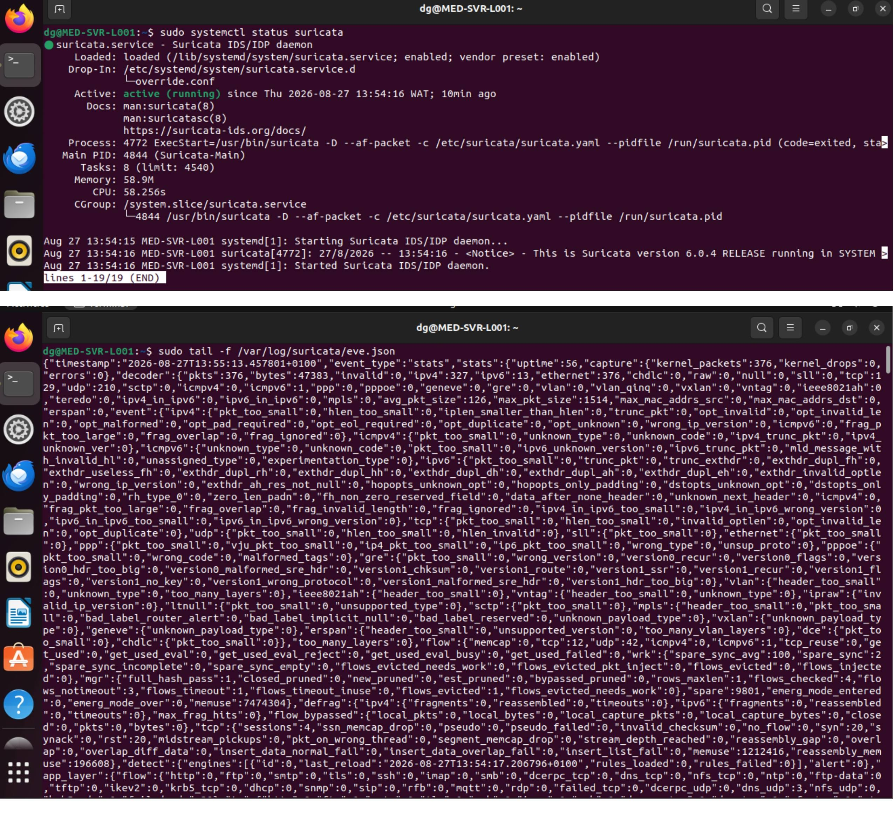
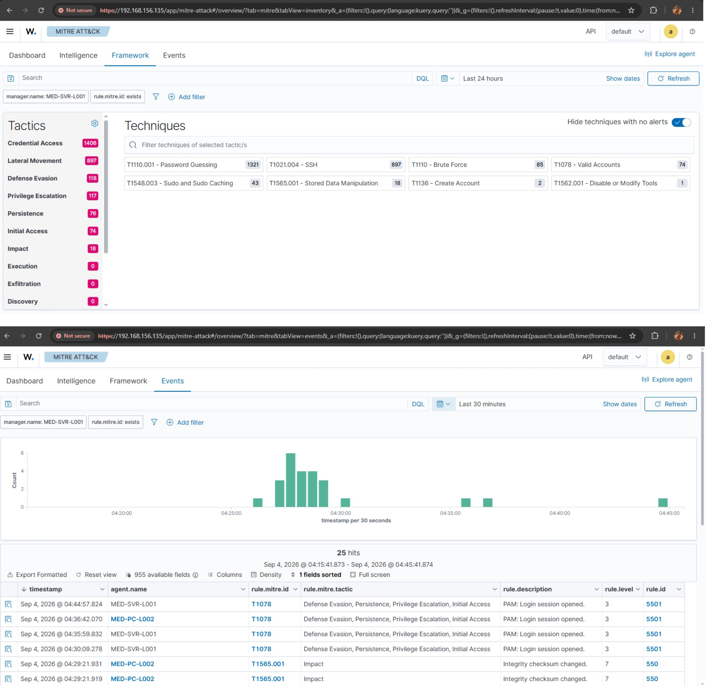
Atomic Red Team was used to safely reproduce three real-world attack patterns from MED-PC-L002 and confirm the monitoring stack actually detects them, not just logs activity.
| Scenario | MITRE ATT&CK ID | Status |
|---|---|---|
| Brute force (SSH credential stuffing) | T1110.004 | Confirmed on Wazuh dashboard + email |
| Privilege escalation (sudo to root) | T1548.003 | Confirmed on Wazuh dashboard |
| Data exfiltration (HTTP over non-standard port) | T1048.003 | Executed live; custom Suricata rule authored, detection tuning in progress |
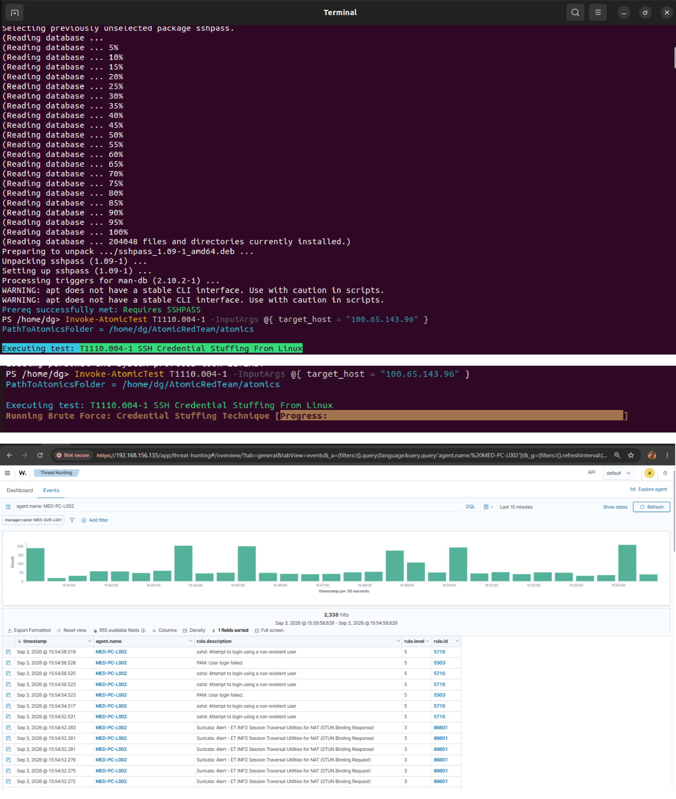
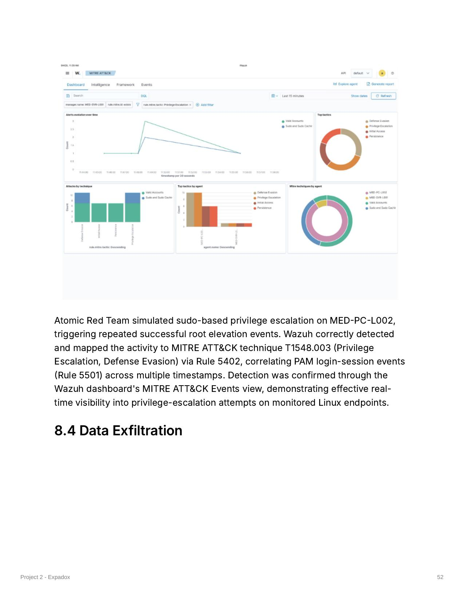
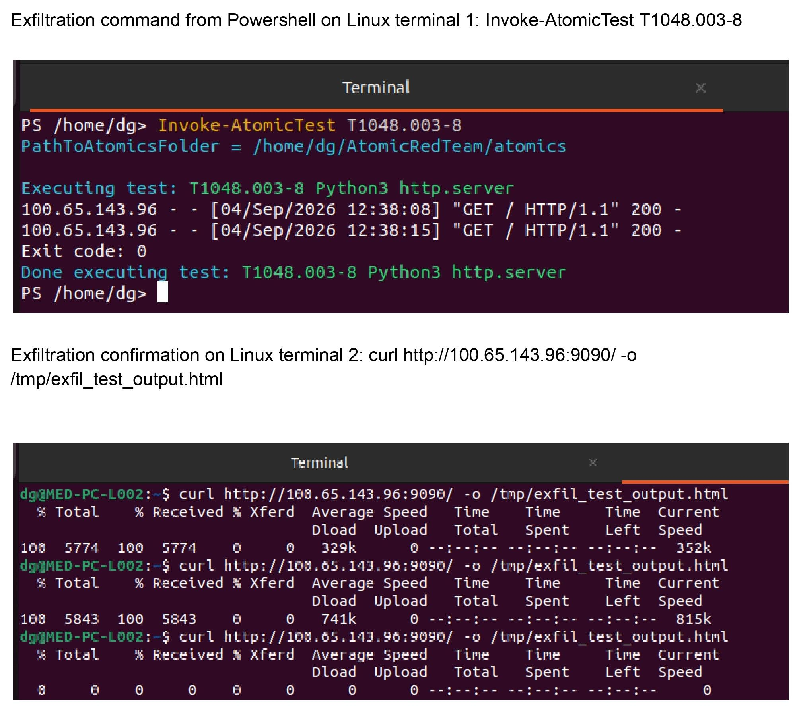
Action1 ran an initial vulnerability assessment across all four enrolled endpoints, surfacing 426 critical, 2,425 high, 2,473 medium, and 27 low severity findings to establish a baseline for remediation.
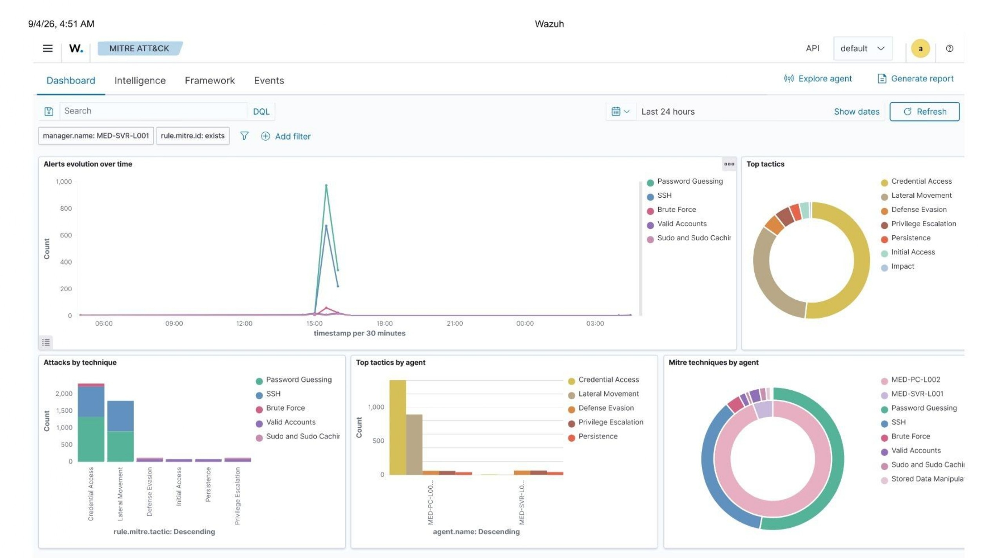
Before this build, MedCore had no centralized logging, no vulnerability baseline, and no visibility into failed logins or network anomalies across its on-premise and cloud infrastructure. After deployment, every endpoint reports into a central Wazuh platform correlated against AWS CloudTrail and Azure Activity Log, vulnerabilities are tracked through Action1, and confirmed threats trigger both a dashboard alert and a severity-based email notification to the SOC analyst.
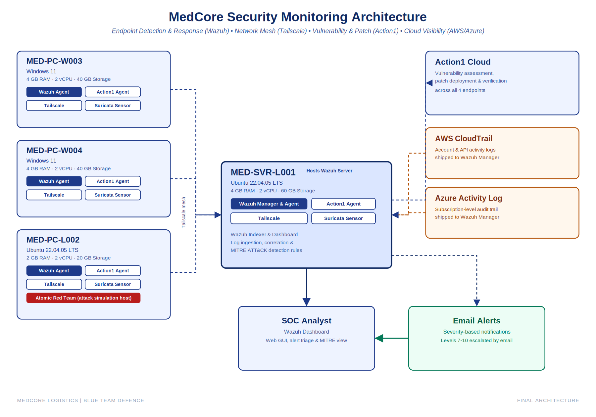
By the end of the sprint, all four endpoints were connected through the Tailscale mesh with Wazuh operational as the central correlation platform and Suricata active across every endpoint. Two of the three required attack simulations, brute force and privilege escalation, were fully confirmed end to end with dashboard and email evidence. The third, data exfiltration, was executed as a live test with a custom Suricata rule authored for it; detection tuning was still in progress at the time of reporting rather than treated as silently complete. The environment reliably detects and alerts on unauthorized access and privilege escalation attempts today, with the remaining work scoped to narrowing one specific detection gap rather than any further deployment.
The full project report, including the detailed 14-day roadmap, architecture notes, every deployment screenshot, and the incident response runbooks for all three scenarios, is documented on Notion.